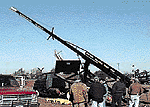
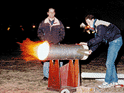

For the past three years, the townsfolk of Lewes, Del. have been holding the annual
competition to see who can launch a pumpkin the greatest distance. Rumor has it that
the contest began as a challenge between local farmers who were bragging about how
far they could throw an anvil. Inexplicably, the anvil became a pumpkin, and
somehow the contest of human power transformed into a battle between huge
pressurized cannons, some with barrel extensions of over 100 feet in length. Yes, it's
absurd, but it's also infinitely cool.
The pneumatic cannons at the Punkin Chunkin are the grandest, most monstrous of
the vegetable-
tossing launchers that spud gun enthusiasts have been building for years. And where
else would one learn and exchange information about such a device than on the Net?
Constructed from PVC tubing, the ordinary spud gun, or potato cannon, is made
from a barrel, a chamber, a screw cap, an igniter and some form of propellant--
usually hair spray. More modern spud guns employ pneumatics (the use of
compressed air instead of propellant) to fire off spuds. But as 15- year-old potato gun
enthusiast TJ Christiansen explains with terrific
hurrah, "You can shoot pretty much any fruit from these things. I've tried putting
arrows through the potatoes and shooting those. I shoot toilet paper."
Christiansen, who has been designing his own custom spud guns for years now,
says he has learned everything there is to learn about the hobby online: the study of
pressures, expanding gases and Newton's Law. What goes up must come down.
Christiansen learned this the hard way after he and some friends fired a potato
straight into the air. The shot was so powerful that everyone lost sight of the potato.
Remembering the unfortunate incident, Christiansen recalls, "We all went running.
Not expecting it to come down, it blasted me on the top of the head. I can safely say
that that knocked a little sense into me. I don't shoot straight up anymore."
Jim Hammer, 41, a.k.a. Mr. Science, is also a big fan of "things that go boom." At his
Web site
, Hammer shows off his massive Watermelon Cannon, made from a 12" PVC sail
tube, and propelled by cinnamon Glade ("It smells better than hairspray"). When he
first fired the gun off in his friend Scott's basement, he was concerned "that the
muzzle blast would blow the windows out of Scott's basement." Nevertheless, Hammer
says they were "not nearly concerned enough to refrain from firing it." The result: a
really big blast and a lot of shrapnel. Approximately six feet of the cannon blew apart
into itty-bitty chunks. No one was hurt, but Hammer now focuses his attention on his
more tame tomato gun (which recently blasted a hole through his garage door before
splattering into tomato paste on the driveway outside).

Hammer also has been conducting experiments with oranges: "We shoot them
straight up so we can time them and calibrate our computer models. We think we're
getting oranges to 200 feet per second which is like 150 mph. It's fun to watch the
orange go way, way up in the air and just hang there."
As dangerous as the hobby may sound, the possession and firing of spud guns is
legal in most states. A letter from the Department of Alcohol, Tobacco and Firearms,
posted on the Net by spud gun hobbyists, explains, "The Bureau has previously
examined devices known as 'Spud Guns, Potato Guns or Spudzookas' and have
determined that such devices, in and of themselves, are not firearms..." To be
considered a firearm, a firing device has to be capable of shooting projectiles over 500
feet per second. But given some of the firepower displayed at the Punkin Chunkin
Web site, at the Radical &
Extreme Hobbies home page, it might not be too long before some of these
cannons fire off projectiles at such high speeds.
It should be noted that some local law enforcement agencies, however, have
banned the use or possession of such devices; stories abound on the Net, written by
disappointed spud gun lovers who explain that locals who misused the guns (by firing
vegetable projectiles from moving vehicles or at one another) have caused
unnecessary
prohibitions of spud launching.
Despite taking a spud to the head, Christiansen believes the hobby is truly safe.
Online enthusiasts agree and
have posted dependable spud gun blueprints and precautions to keep newcomers
from causing themselves injury. At the Spud Zone, interested visitors are provided with the spud gun
code of ethics: Always use alcohol-based propellants; do not fire guns at people,
animals or moving vehicles; store the gun in a dry place; and keep the ammo in a
separate location (apparently, spudzooka lovers have a sense of humor, too).
In addition to posting blueprints and safety precautions online, spud gun zealots
also trade information on gun accessories and different varieties of guns that have
been successfully experimented with; at his site, Christiansen details how to attach
shoulder straps, sights and scopes, wheels (for big guns), shoulder rests and ram rod
holders. The author of the
Spud Gun Fuel Experiments Homepage has been posting empirical
information regarding different propellant formulas, including variations of methyl
hydrate, white gas (camping fuel), alcohol and propane. And Hammer posts
descriptions of catapults and chicken guns; "For industrial strength lobbing, it's hard
to beat the chicken guns used by most of the major aircraft manufacturers to test
windshields and other airplane parts which must stand up to bird strikes," writes
Hammer. "I witnessed a test shot recently against a 1-inch-thick aluminum plate. The
plate rang like a bell when struck by the chicken, and chicken parts shot 50 to 80 feet
into the air."
As intriguing as the chicken gun display may sound, it's widely accepted among
spud gunners that the Punkin Chunkin is the big daddy of all such launching sports.
There, human powered devices, like catapults, rubberband slings and bicycle-
operated centrifugal throwers all make for a good pumpkin mess. The real attractions,
of course, are the enormous pneumatic cannons; despite their intricacy, and
incredible cost, many cannons fail to work, or only work once before self-destructing
in comical fashion. "You have to be a certain person to really enjoy the massiveness of
it all," laughs Scott Fichter, author of the Radical & Extreme Hobbies home page. "The
power is just so out of control, it's just so out of hand. I brought a couple of friends to
see the cannons and they've since lost their minds."
This past year's winner of the "Punkin Chunkin" tossed a pumpkin 1,700 yards, or
5,100 feet--at just under one mile, the flying gourd landed only a few feet shy of a
nearby highway. Attendees cheered as the pumpkin exploded on contact with the
ground, splattering its gooey innards across the asphalt and the sides of passing
vehicles.